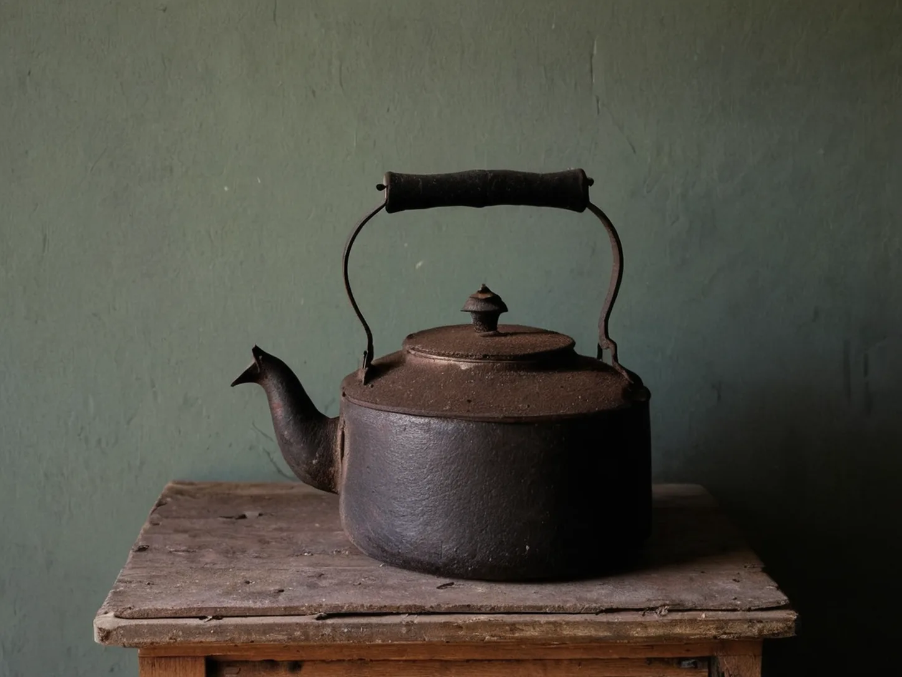

The Kettle Goes Back on the Stove
When mornings cool at the turn of autumn, the household kettle returns to the stove and restores a small, familiar rhythm before the day begins.

The first colder morning
The kettle had spent the hottest weeks pushed to the back of the stove, its lid tipped sideways and a faint white ring of old water scale visible near the base. Then one morning the window stayed cool after dawn, and the first sound in the kitchen was its handle settling onto the iron ring. The flame beneath it was small, but the room altered at once. The metal held the night's chill, and the wooden grip felt colder than the room around it.
No one called this a ceremony. Summer had simply been the season of jugs, open windows, and water poured without waiting. When the kettle returned, its slow beginning made a different kind of morning possible: the door stayed closed a little longer, and the stove was lit before the street had properly woken. Its return was practical, but its sound made the kitchen feel inhabited before breakfast began.
A rule without speaking
Many homes keep such rules without recording them. A basin moves nearer the bed, a heavier cloth appears on a chair, or a kettle returns to the stove before anyone says that the season has changed. The object does not create the weather; it gives the household a way to answer it. A change becomes legible when objects move from storage to the place where hands find them.
The First Cup of Warm Water begins with a mug filled beside a communal kettle, while The Copper Hot Water Bottle follows warmth carried toward the bed in winter. Biting Autumn: Watermelon on the First Autumn Evening keeps the last heat on the table. This kettle belongs to the narrow interval between them, when the mornings cool before the afternoons have agreed.
Steam at the window
Before the water moved, the kettle made only the faintest sound. A line of steam later rose past the dark handle and disappeared against the window, leaving no mark on the glass. The stove top held a few soot freckles and the round shadow of the base. At that hour, even the empty space around it seemed arranged for the coming day.
After the cups were cleared, the kettle remained where it was, ready for the next morning rather than put away. That is how the household noticed the change: not through a formal first day, but through a familiar object returning to its old place. The quieter season had begun by occupying one ring of the stove.